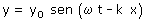
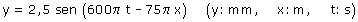
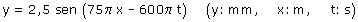

a) La ecuación de onda será de la forma:  El signo negativo en la fase indica que la onda se propaga en sentido de x creciente Ahora hay que determinar los parámetros de la onda:
La ecuación de la onda (o función de onda) será entonces:  También puede darse la ecuación de esta forma:  |